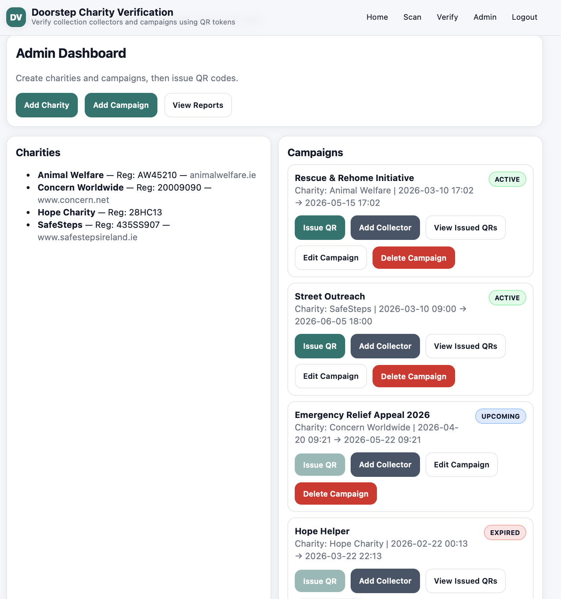
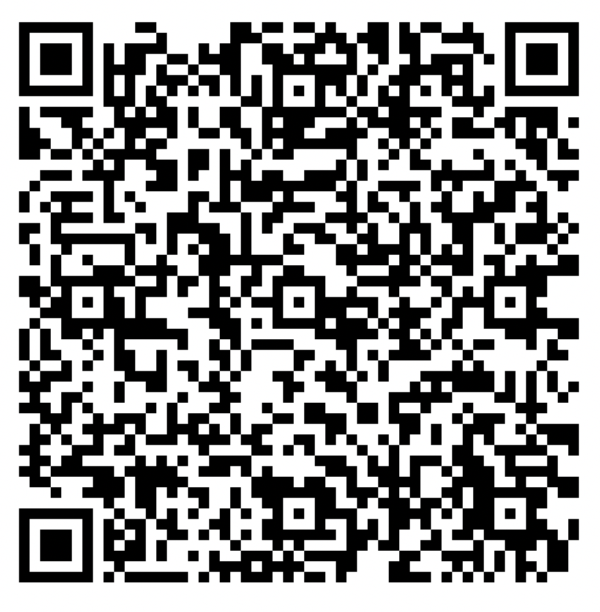
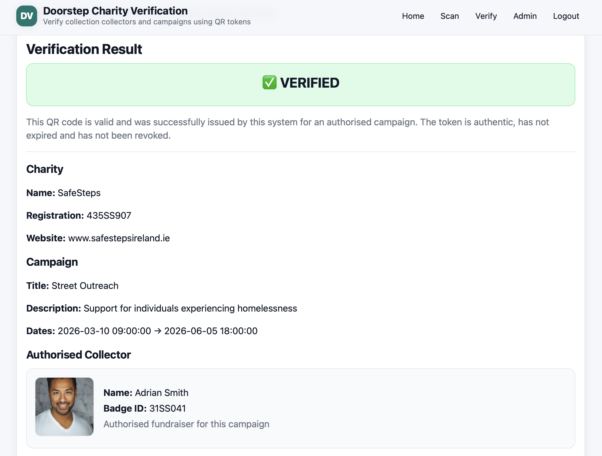
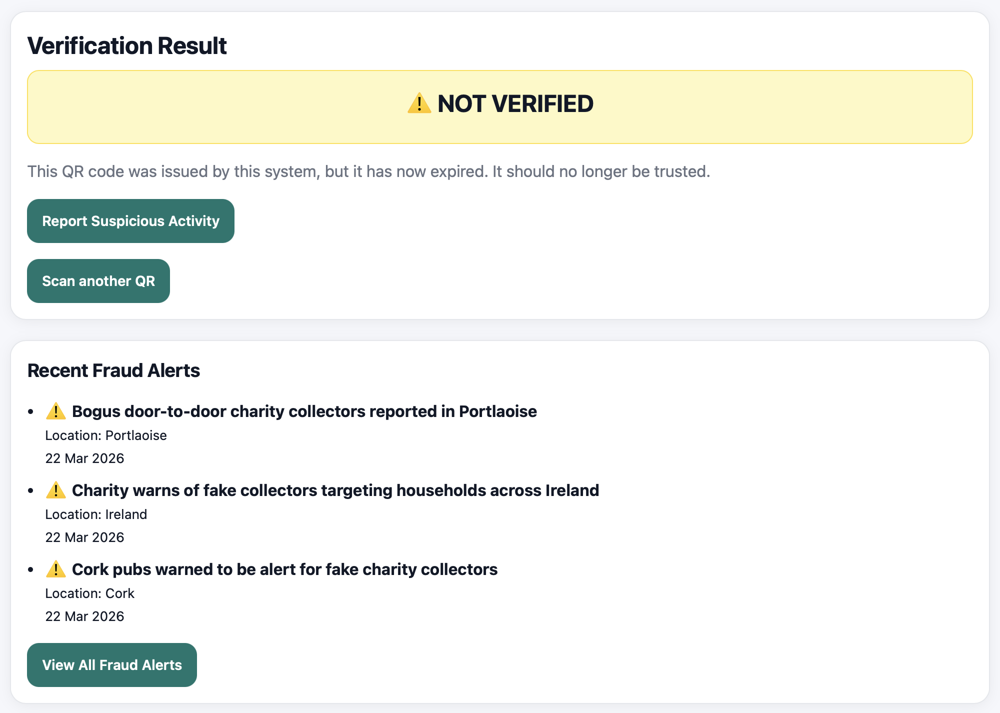
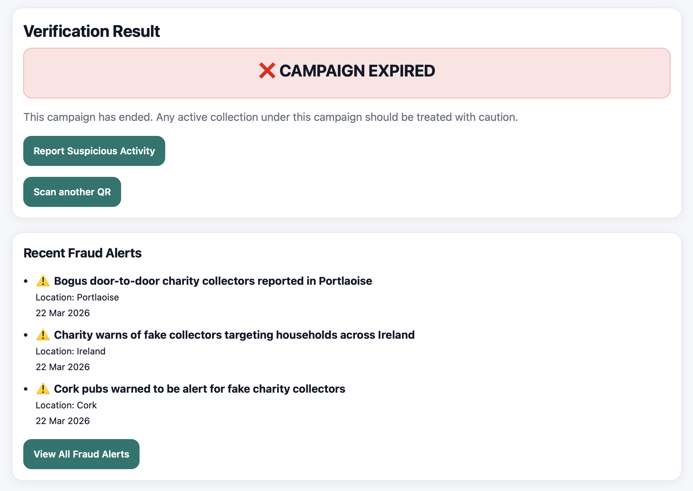

Project Overview
This project is a web-based verification system designed to help the public confirm whether a charity collector is genuine. It uses secure QR codes containing signed, time-limited tokens that can be scanned to verify authorised collectors, campaigns and charities in real time.
The aim is to reduce fraud in doorstep and street-based fundraising by replacing paper-based checks and static badges with a more secure digital approach.
Why This Project Matters
Charity fraud can damage public trust and reduce confidence in genuine fundraising campaigns. This system helps protect donors by making it easier to identify valid collectors and detect suspicious activity.
Core Features
- Secure QR code generation for approved charity campaigns
- Public verification page showing whether a collector is genuine
- Admin dashboard for managing charities, campaigns and collectors
- Token expiry and revocation checks
- Collector mismatch and suspicious activity reporting
- Fraud awareness section using recent charity scam alerts
How It Works
An administrator creates a charity and campaign, then issues a QR code for an authorised collector. When a member of the public scans the QR code, the system checks whether the token is authentic, whether it has expired, whether it has been revoked and whether it matches a valid campaign and collector.
System Demonstration

Admin Dashboard
The dashboard allows the administrator to manage charities, campaigns, collectors and issued QR codes from one central interface.

Issued QR Code
Each authorised collection can be linked to a secure QR code that is later scanned for verification by the public.

Verified Result
A valid scan shows a verified result together with charity, campaign and collector details so the donor can check legitimacy immediately.

Expired Token Result
If the QR code token has expired, the system clearly marks it as not verified and warns the user not to trust it.

Expired Campaign Result
If a campaign has already ended, the system warns the public that any active collection under that campaign should be treated with caution.
Advanced Features
- Suspicious activity reporting for users who believe a collector may be fraudulent
- Collector verification against authorised campaign data
- Fraud alert display based on real-world charity scam reports
- Status handling for verified, expired and invalid QR scans
Technology Stack
- Backend: Python (Flask)
- Database: SQLite / SQLAlchemy
- Frontend: HTML, CSS, Jinja Templates
- Security: Signed tokens for QR verification
Supervisor and Second Reader Access
The public-facing site can be accessed using the live CS1 link below.
Admin login details available in the submitted appendix.
Project Links
GitHub Repository: View Project on GitHub!
Live CS1 Site: Open the deployed project on CS1
This page provides access to the deployed project and supporting screenshots.